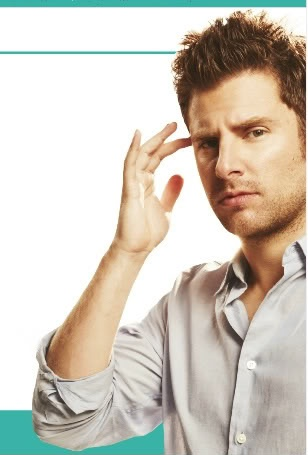

Shawn Spencer
Description:
Shawn Spencer was born in 1977 to Henry and Madeleine Spencer in Santa Barbara, California. His parents separated when he was a teenager, leading him to rebel and soon become distant from his father. He comes from a family of cops, his father Henry being an officer and, later, a detective for the Santa Barbara Police Department. He is hyper-observant, a trait developed and inherited from his father, and has an eidetic memory, presumably inherited from his mother, and could've graduated valedictorian according to his file history read by Lucinda Barry. He also scored 100 on the Police Academy exam at the age of 15. Due to his father's extensive police training during childhood and early teenhood, Shawn developed an adeptness and a fondness for police work. When his father divorced his mother, Shawn, in his teens, began hating his father, and consequently lost interest in becoming part of the police force since he did not want to follow his father's footsteps.
Shawn, after high school, had over 50 jobs, one of which included working in a candy store. He also started an acupuncture clinic and drove a weinermobile, claiming that he did it for the hot dogs. He often took jobs just because they were fun, and then once he lost interest, he would quit, if he didn't lose his job first. However, Shawn often used his amazing powers of observation and deduction to call in tips to the police anonymously. After one of Shawn's tips lead police back to him, he claims to be psychic to avoid jail time after being wrongly accused of being an inside man. When he uses his observational skills to convince them of his special abilities, the department is slightly impressed, hiring him on as "psychic consultant". He and his best friend Gus open up their own "psychic detective agency" called 'Psych'.
Shawn uses a set of unique skills to solve crimes for the SBPD and sometimes for private clients who hire him on the side. His eye for detail, outside-the-box thinking, and throw-caution-to-the-wind-to-follow-a-hunch attitude make him excellent at following and solving cases. He often enjoys playing up the part of a "psychic" and has many "visions" as long as he has an audience. More than once, he has been in trouble with the SBPD due to his lack of care for police protocol.
At the end of "No Trout About It", Harris Trout, the new interim SBPD chief, says he will no longer be hiring psychics, leaving the Psych office non-police-affiliated.
Best Quotes:
- “I don’t lose things. I place things in locations which later elude me.”
- “Take pictures. Not of sights. Don’t take pictures of buildings. Take pictures of moments, because that’s what matters.”
- “What isn’t clear is why people always say ‘goes without saying,’ yet still feel compelled to say the thing that was supposed to go without saying. Doesn’t that bother you?”
- "Doodles are the windows to the soul, Gus."
- "Just because you put syrup on something don't make it pancakes."
- Henry: "He's afraid of raccoons." Shawn: "Because they're terrifying, and wear little masks."
- Lassiter: "What do you two know about street racing anyway?" Shawn: "Only what we learned from The Fast and The Furious. So... everything."
- Kurt Smith: "Afternoon, gentlemen." Shawn: "Oh dear god. It’s you. The real you. The fleshy you. I love you. Do you have any idea how much I love you?" Kurt Smith: "I think I do now."
- "I'm thinking about taking on work as a manny."
- "Would you please stop quoting Math like it's a person? Next thing you'll tell me Math is black."